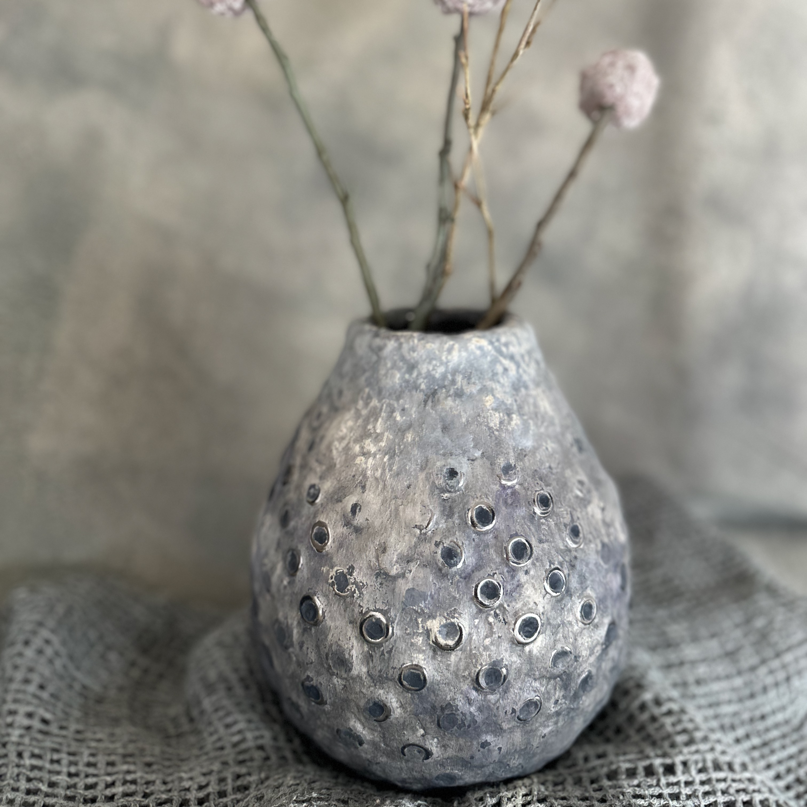

The Ash Collection
Sculptural vessels | Weathered forms | Original works
The Ash Collection explores weathered forms, erosion and the beauty found in imperfection. Each sculptural work reflects on fragility, resilience and what remains.
Sculptural vessels | Weathered forms | Original works
The Ash Collection explores weathered forms, erosion and the beauty found in imperfection. Each sculptural work reflects on fragility, resilience and what remains.